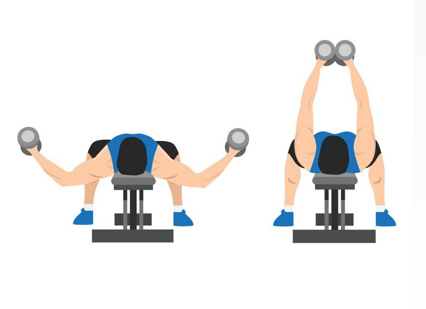
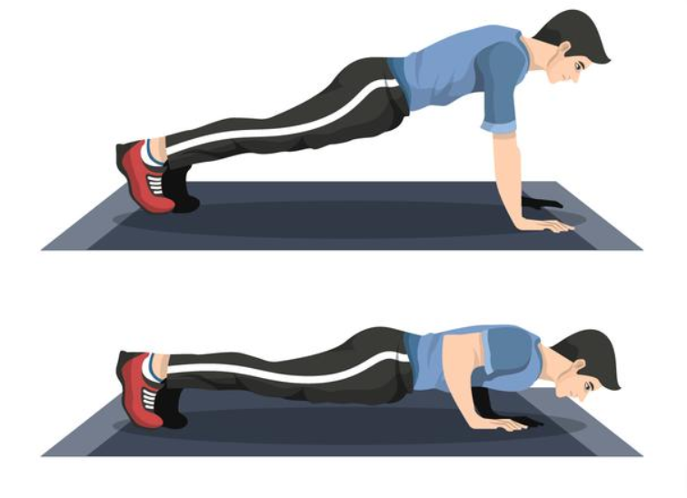
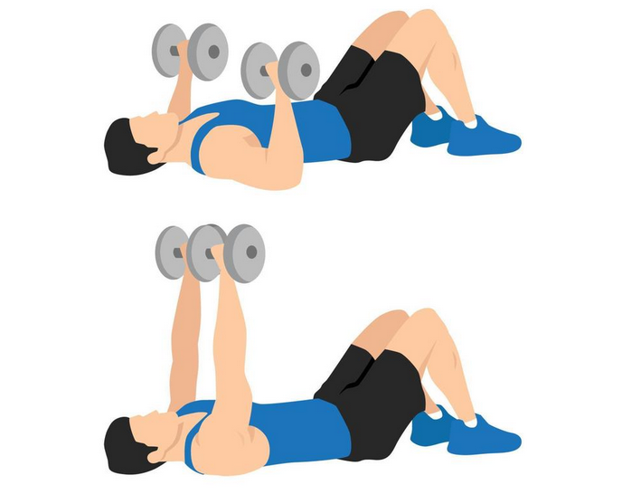
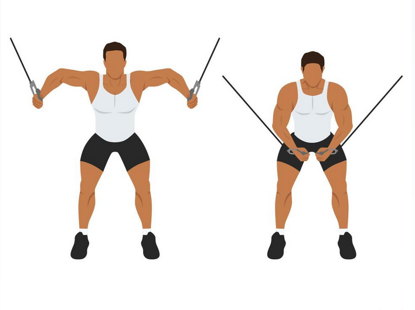
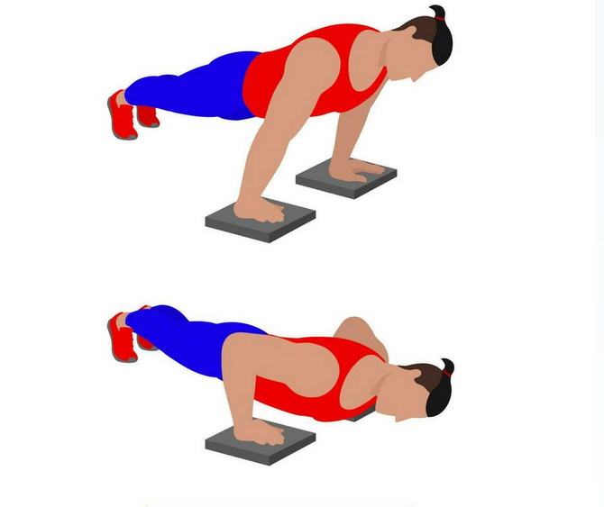
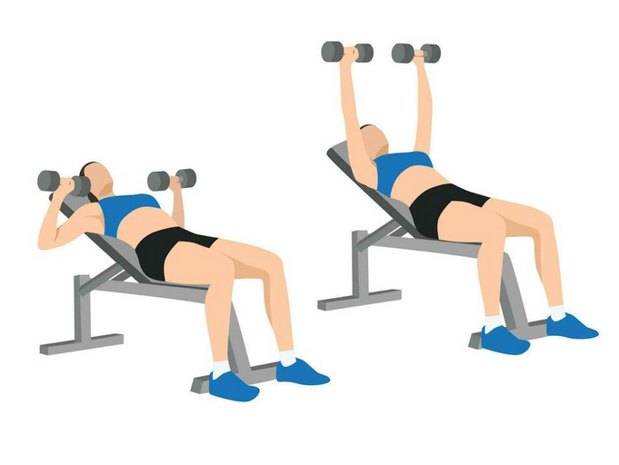

Without Equipment
-

Dumbbell Chest Fly
The dumbbell chest fly may be a good exercise if you're looking to build strength in your chest, shoulder, and arm muscles. Start with a light set of dumbbells if you're a beginner, and slowly increase the amount of weight each week as you build strength
-

Pushup
While the push-up largely targets the muscles of the chest, the pectoralis major and minor, several other muscle groups contribute. Namely, these include the triceps, anterior deltoids, and the core muscles.
-

Dumbbell Floor Press
The dumbbell floor press provides an explosive power and triceps-isolating exercise in its short range of movement. While from afar it may seem an easier version of the bench press it is actually a useful addition to help to improve the lockout and one rep max of your bench press.
-

Band Chest Fly
Chest flyes are one of the best chest isolation exercises that can help open up your chest muscles. Chest flyes may help reduce upper back pain, increase range of motion, and reduce tightness in the upper body
-

Deficit Pushup
The deficit push up is a chest and core strengthening exercise that uses the body weight as resistance.
-

Incline Dumbbell Bench Press
The incline dumbbell press is the dumbbell variation of the barbell incline bench press and uses an incline or adjustable bench rather than an incline bench rack.
With Equipment
-
Bench Press
This exercise is mainly used to build muscle and increase strength. The bench press is a compound exercise that works your chest and shoulders, as well as the triceps. It's considered one of the best exercises for building muscle and increasing strength, making it an important part of most workouts.

-
Seated Row
Specifically, the seated row targets the muscles in your upper back and also the latissimus dorsi — a muscle on the outer side of the chest wall.

-
Cable Crossover
Cable Crossovers are always a fantastic addition to any chest workout. The Cable Crossover exercise primarily targets the pectoralis major and pectoralis minor, but it also hits the anterior deltoid, rhomboids, levator scapulae, and latissimus dorsi.

-
Incline Bench Press
The purpose of the incline press is to focus more of the work on the upper pecs. The main benefit in performing incline presses is to develop the upper portion of the pectoral muscles. When the bench is set at an incline (15 to 30 degrees), you activate your shoulders more since it's comparable to a shoulder press.